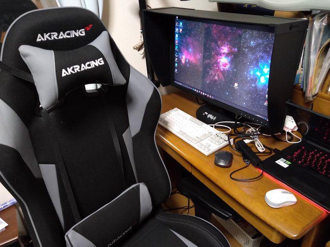

<!DOCTYPE html>
<html>

<head><meta name="generator" content="Hexo 3.8.0">
  <meta charset="utf-8">
  
    <title>
      
        2020年の目標を振り返る | 
            ほしよみ大学生のブログ
    </title>
    <meta name="viewport" content="width=device-width">
    <meta name="description" content="はじめに2020年の目標を書いておきます．2020年末に振り返りとして公開したいと思います． というわけで見返してみました．赤字が年末になってから書いてるものです．">
<meta name="keywords" content="その他">
<meta property="og:type" content="article">
<meta property="og:title" content="2020年の目標を振り返る">
<meta property="og:url" content="http://dabokun.github.io/2020/12/29/00000045-2020-goals/index.html">
<meta property="og:site_name" content="ほしよみ大学生のブログ">
<meta property="og:description" content="はじめに2020年の目標を書いておきます．2020年末に振り返りとして公開したいと思います． というわけで見返してみました．赤字が年末になってから書いてるものです．">
<meta property="og:locale" content="ja">
<meta property="og:image" content="http://dabokun.github.io/2020/12/29/00000045-2020-goals/card.jpg">
<meta property="og:updated_time" content="2021-06-07T17:24:14.819Z">
<meta name="twitter:card" content="summary_large_image">
<meta name="twitter:title" content="2020年の目標を振り返る">
<meta name="twitter:description" content="はじめに2020年の目標を書いておきます．2020年末に振り返りとして公開したいと思います． というわけで見返してみました．赤字が年末になってから書いてるものです．">
<meta name="twitter:image" content="http://dabokun.github.io/2020/12/29/00000045-2020-goals/card.jpg">
<meta name="twitter:creator" content="@astrodabo">
      
        <link rel="alternative" href="/atom.xml" title="ほしよみ大学生のブログ" type="application/atom+xml">
        
          
            <link rel="icon" href="/images/favicon.png">
            
              <link rel="stylesheet" href="/css/style.css">
                <!--[if lt IE 9]><script src="//html5shiv.googlecode.com/svn/trunk/html5.js"></script><![endif]-->
                
                  <script data-ad-client="ca-pub-1350688970555904" async src="https://pagead2.googlesyndication.com/pagead/js/adsbygoogle.js"></script>
</head></html>
<body>
  <div id="container">
    <div class="mobile-nav-panel">
	<i class="icon-reorder icon-large"></i>
</div>
<header id="header">
	<h1 class="blog-title">
		<a href="/">
			ほしよみ大学生のブログ
		</a>
	</h1>
	<nav class="nav">
		<ul>
			
				<li><a href="/">
						Home
					</a></li>
				
				<li><a href="/categories">
						Categories
					</a></li>
				
				<li><a href="/tags">
						Tags
					</a></li>
				
				<li><a href="/archives">
						Archives
					</a></li>
				
				<li><a href="/about">
						About
					</a></li>
				
				<li><a href="/work">
						Work
					</a></li>
				
					<li><a id="nav-search-btn" class="nav-icon" title="Search"></a></li>
					<li><a href="https://github.com/dabokun"></a>
					</li>
					<li><a href="https://twitter.com/astrodabo"></a></li>
					
						<li><a href="/atom.xml" id="nav-rss-link" class="nav-icon" title="RSS Feed"></a>
						</li>
						
		</ul>
	</nav>
	<div id="search-form-wrap">
		<form action="//google.com/search" method="get" accept-charset="UTF-8" class="search-form"><input type="search" name="q" class="search-form-input" placeholder="Search"><button type="submit" class="search-form-submit">&#xF002;</button><input type="hidden" name="sitesearch" value="http://dabokun.github.io"></form>
	</div>
</header>

    <div id="main">
      <article id="post-00000045-2020-goals" class="post">
	<footer class="entry-meta-header">
		<span class="meta-elements date">
			<a href="/2020/12/29/00000045-2020-goals/" class="article-date">
  <time datetime="2020-12-29T12:02:01.000Z" itemprop="datePublished">2020-12-29</time>
</a>
		</span>
		<span class="meta-elements author">astr0dab0</span>
		<div class="commentscount">
			
			<a href="http://dabokun.github.io/2020/12/29/00000045-2020-goals/#disqus_thread" class="article-comment-link">Comments</a>
			
		</div>
	</footer>
	
	<header class="entry-header">
		
  
    <h1 class="article-title entry-title" itemprop="name">
      2020年の目標を振り返る
    </h1>
  

	</header>
	<div class="entry-content">
		
		
		<div id="toc" class="toc-article">
			<p class="toc-title">目次</p>
			<ol class="toc"><li class="toc-item toc-level-3"><a class="toc-link" href="#はじめに"><span class="toc-number">1.</span> <span class="toc-text">はじめに</span></a><ol class="toc-child"><li class="toc-item toc-level-4"><a class="toc-link" href="#環境に金をかける"><span class="toc-number">1.1.</span> <span class="toc-text">環境に金をかける</span></a></li><li class="toc-item toc-level-4"><a class="toc-link" href="#FSQ-の撮影環境を整える"><span class="toc-number">1.2.</span> <span class="toc-text">FSQ の撮影環境を整える</span></a></li><li class="toc-item toc-level-4"><a class="toc-link" href="#キャンプ用具を買う"><span class="toc-number">1.3.</span> <span class="toc-text">キャンプ用具を買う</span></a></li><li class="toc-item toc-level-4"><a class="toc-link" href="#サービスを一個立ち上げてみる"><span class="toc-number">1.4.</span> <span class="toc-text">サービスを一個立ち上げてみる</span></a></li><li class="toc-item toc-level-4"><a class="toc-link" href="#英会話を勉強する"><span class="toc-number">1.5.</span> <span class="toc-text">英会話を勉強する</span></a></li><li class="toc-item toc-level-4"><a class="toc-link" href="#機械学習を勉強する"><span class="toc-number">1.6.</span> <span class="toc-text">機械学習を勉強する</span></a></li><li class="toc-item toc-level-4"><a class="toc-link" href="#Rust-を今以上に使いこなす"><span class="toc-number">1.7.</span> <span class="toc-text">Rust を今以上に使いこなす</span></a></li><li class="toc-item toc-level-4"><a class="toc-link" href="#研究用ソフトウェア開発を天体写真現像まで広げる"><span class="toc-number">1.8.</span> <span class="toc-text">研究用ソフトウェア開発を天体写真現像まで広げる</span></a></li><li class="toc-item toc-level-4"><a class="toc-link" href="#写真の投稿頻度を上げる"><span class="toc-number">1.9.</span> <span class="toc-text">写真の投稿頻度を上げる</span></a></li><li class="toc-item toc-level-4"><a class="toc-link" href="#修論をがんばる"><span class="toc-number">1.10.</span> <span class="toc-text">修論をがんばる</span></a></li></ol></li><li class="toc-item toc-level-3"><a class="toc-link" href="#いかがでしたか？"><span class="toc-number">2.</span> <span class="toc-text">いかがでしたか？</span></a></li></ol>
		</div>
		
		<h3 id="はじめに"><a href="#はじめに" class="headerlink" title="はじめに"></a>はじめに</h3><p>2020年の目標を書いておきます．2020年末に振り返りとして公開したいと思います．</p>
<font color="red">というわけで見返してみました．赤字が年末になってから書いてるものです．</font>

<a id="more"></a>
<h4 id="環境に金をかける"><a href="#環境に金をかける" class="headerlink" title="環境に金をかける"></a>環境に金をかける</h4><p>昨年までは FSQ のことしかほぼ頭になかったので，今年はもっと小物かつ自身の普段の生活を良くするものにお金をかけたいと思います．</p>
<p>目標は</p>
<ul>
<li>作業椅子</li>
<li>自作デスクトップPC</li>
</ul>
<font color="red">年末になってしまいましたが，椅子は買うことができました．</font>

<p></p>
<font color="red">PCは諸事情により高性能ゲーミングノートを貸与されてしまったので，しばらくは保留でいいかな…．</font>

<h4 id="FSQ-の撮影環境を整える"><a href="#FSQ-の撮影環境を整える" class="headerlink" title="FSQ の撮影環境を整える"></a>FSQ の撮影環境を整える</h4><p>普段の生活を良くするものではないですが，FSQ の最低限撮影できるところまでもっていきたいです．</p>
<p>目標は</p>
<ul>
<li>鏡筒バンド</li>
<li>カメラマウント(EOS)</li>
<li>フラットナー</li>
<li>ガイド一式</li>
</ul>
<p>レデューサとエクステンダーはオプションで…．</p>
<font color="red">目標通りになりました．エクステンダーほしい．</font>

<h4 id="キャンプ用具を買う"><a href="#キャンプ用具を買う" class="headerlink" title="キャンプ用具を買う"></a>キャンプ用具を買う</h4><p>これも普段の生活を良くするものではないですが，キャンプ用具を一式そろえたいところではありますね．</p>
<font color="red">他人に甘えすぎた結果チェアしか買ってません．反省して来年になったら（特にお湯を作れるものを）揃えます…．</font>

<h4 id="サービスを一個立ち上げてみる"><a href="#サービスを一個立ち上げてみる" class="headerlink" title="サービスを一個立ち上げてみる"></a>サービスを一個立ち上げてみる</h4><p>これは去年あたりから考えていたことです．簡単な Web サービスを一つ作ってみたいと思っています．</p>
<font color="red">Web プログラミング何もわからないマンだったので勉強しつつ，一つだけ作っていたものがあったのですが，まだ公開には至っていません．開発環境も整えられる状況なので，また少しずつ作っていきたいな…．</font>

<h4 id="英会話を勉強する"><a href="#英会話を勉強する" class="headerlink" title="英会話を勉強する"></a>英会話を勉強する</h4><p>どうやって勉強しようか…()</p>
<font color="red">やりたい気持ちはあるが，まだ始めてません．特にこんなご時世になってしまったので，人と会話する機会は必要です…．</font>

<h4 id="機械学習を勉強する"><a href="#機械学習を勉強する" class="headerlink" title="機械学習を勉強する"></a>機械学習を勉強する</h4><p>天体写真に使えるかに限らず，知識としてもっておきたい．</p>
<font color="red">多少勉強しましたが．が，まだ大枠を掴んだ程度．</font>

<h4 id="Rust-を今以上に使いこなす"><a href="#Rust-を今以上に使いこなす" class="headerlink" title="Rust を今以上に使いこなす"></a>Rust を今以上に使いこなす</h4><p>今開発している研究用ソフトウェアを自在に改造できるレベルになりたい．</p>
<font color="red">これはそれなりに進められた気がします．</font>

<h4 id="研究用ソフトウェア開発を天体写真現像まで広げる"><a href="#研究用ソフトウェア開発を天体写真現像まで広げる" class="headerlink" title="研究用ソフトウェア開発を天体写真現像まで広げる"></a>研究用ソフトウェア開発を天体写真現像まで広げる</h4><p>前述のものができないとこれもできない．</p>
<font color="red">まだ広げられてなーい！画像は開けるので始めようと思えば始められるんですが……（あわわ）．ただ<a href="/2020/11/20/00000041-asimproc-start/">画像処理の研究会を立ち上げた</a>のは一つ前進になったかと思います．</font>

<h4 id="写真の投稿頻度を上げる"><a href="#写真の投稿頻度を上げる" class="headerlink" title="写真の投稿頻度を上げる"></a>写真の投稿頻度を上げる</h4><p>そのためには撮影頻度も上げないといけませんが…．</p>
<font color="red">上がりませんでしたね…まぁ今年はしゃーない！ｗ<br>
少し遠征も振り返ってみますと，今年は3月に合宿で<a href="/2020/03/25/00000032-2020-03-komoro/" target="_blank" rel="noopener">小諸</a>，5月に<a href="/2020/06/01/00000033-2020-05-amagi/" target="_blank" rel="noopener">天城</a>，6月に<a href="/2020/07/02/00000034-2020-06-summary/" target="_blank" rel="noopener">美ヶ原</a>，7月に<a href="/2020/07/20/00000035-2020-07-neowise/" target="_blank" rel="noopener">ネオワイズ彗星目的で城ヶ島</a>，8月に<a href="/2020/08/17/00000036-2020-08-amagi/" target="_blank" rel="noopener">天城</a>，<a href="/2020/08/22/00000037-2020-08-hoshinomura/" target="_blank" rel="noopener">星の村天文台</a>，10月に<a href="/2020/10/29/00000039-2020-10/" target="_blank" rel="noopener">原村，仁科峠，大菩薩峠</a>，11月に<a href="/2020/11/17/00000040-2020-11/" target="_blank" rel="noopener">しらびそ高原，野辺山</a>，12月に<a href="/2020/12/24/00000044-2020-12-recent/" target="_blank" rel="noopener">朝霧×2</a>で，計13回でした．<br>
稼働筒はほとんど FSQ で，こいつのために1年しっかり使えたかなと思っています．他のレンズの稼働率上げるためにもやはりカメラは必要なのだ…．
</font>

<h4 id="修論をがんばる"><a href="#修論をがんばる" class="headerlink" title="修論をがんばる"></a>修論をがんばる</h4><p>自明．</p>
<font color="red">これは達成．修士を半年早期で卒業できました．</font>

<h3 id="いかがでしたか？"><a href="#いかがでしたか？" class="headerlink" title="いかがでしたか？"></a><font color="red">いかがでしたか？</font></h3><font color="red">できなかったこともたくさんあった2020年でしたし，多くのことにハードルができてしまった2020年でもありましたが，来年も社会情勢に負けず趣味に研究に色々やっていきたいものです．それではみなさん，良いお年を．</font>
		
	</div>
	<footer class="article-footer">
		<a href="https://twitter.com/intent/tweet?text=2020%E5%B9%B4%E3%81%AE%E7%9B%AE%E6%A8%99%E3%82%92%E6%8C%AF%E3%82%8A%E8%BF%94%E3%82%8B｜%E3%81%BB%E3%81%97%E3%82%88%E3%81%BF%E5%A4%A7%E5%AD%A6%E7%94%9F%E3%81%AE%E3%83%96%E3%83%AD%E3%82%B0&url=http://dabokun.github.io/2020/12/29/00000045-2020-goals/" class="twitter-share-button" target="_blank" title="Twitter"></a>
		<script async src="https://platform.twitter.com/widgets.js" charset="utf-8"></script>

		<div id="fb-root"></div>
		<script async defer crossorigin="anonymous" src="https://connect.facebook.net/ja_JP/sdk.js#xfbml=1&version=v4.0"></script>
		<div class="fb-share-button" data-href="http://dabokun.github.io/2020/12/29/00000045-2020-goals/" data-layout="button_count" data-size="small"><a target="_blank" href="https://www.facebook.com/sharer/sharer.php?u=https%3A%2F%2Fdabokun.github.io%2F&amp;src=sdkpreparse" class="fb-xfbml-parse-ignore">シェア</a></div>
	</footer>
	<footer class="entry-footer">
		<div class="entry-meta-footer">
			<span class="category">
				
  <div class="article-category">
    <a class="article-category-link" href="/categories/others/">その他</a>
  </div>

			</span>
			<span class=" tags">
				
  <ul class="article-tag-list"><li class="article-tag-list-item"><a class="article-tag-list-link" href="/tags/others/">その他</a></li></ul>

			</span>
		</div>
	</footer>
	
	
<nav id="article-nav">
  
    <a href="/2021/01/04/00000046-aflak-improc-01/" id="article-nav-newer" class="article-nav-link-wrap">
      <strong class="article-nav-caption">Newer</strong>
      <div class="article-nav-title">
        
          自作プログラムで画像処理（Raw展開～ノイズ解析まで）
        
      </div>
    </a>
  
  
    <a href="/2020/12/24/00000044-2020-12-recent/" id="article-nav-older" class="article-nav-link-wrap">
      <strong class="article-nav-caption">Older</strong>
      <div class="article-nav-title">
        
          最近のこと（遠征とか）
        
      </div>
    </a>
  
</nav>

	
</article>


<section id="comments">
	<div id="disqus_thread">
		<noscript>Please enable JavaScript to view the <a href="//disqus.com/?ref_noscript">comments powered by
				Disqus.</a></noscript>
	</div>
</section>

    </div>
    <div class="mb-search">
  <form action="//google.com/search" method="get" accept-charset="utf-8">
    <input type="search" name="q" results="0" placeholder="Search">
    <input type="hidden" name="q" value="site:dabokun.github.io">
  </form>
</div>
<footer id="footer">
	<h1 class="footer-blog-title">
		<a href="/">ほしよみ大学生のブログ</a>
	</h1>
	<span class="copyright">
		&copy; 2023 astr0dab0<br>
		Modify from <a href="http://sanographix.github.io/tumblr/apollo/" target="_blank">Apollo</a> theme, designed by <a href="http://www.sanographix.net/" target="_blank">SANOGRAPHIX.NET</a><br>
		Powered by <a href="http://hexo.io/" target="_blank">Hexo</a>
	</span>
</footer>
    
<script>
  var disqus_shortname = 'astr0dab0';
  
  var disqus_url = 'http://dabokun.github.io/2020/12/29/00000045-2020-goals/';
  
  (function(){
    var dsq = document.createElement('script');
    dsq.type = 'text/javascript';
    dsq.async = true;
    dsq.src = '//go.disqus.com/embed.js';
    (document.getElementsByTagName('head')[0] || document.getElementsByTagName('body')[0]).appendChild(dsq);
  })();
</script>


<script src="//ajax.googleapis.com/ajax/libs/jquery/2.0.3/jquery.min.js"></script>


<link rel="stylesheet" href="/fancybox/jquery.fancybox.css" media="screen" type="text/css">
<script src="/fancybox/jquery.fancybox.pack.js"></script>


<script src="/js/script.js"></script>
  </div>
</body>
</html>